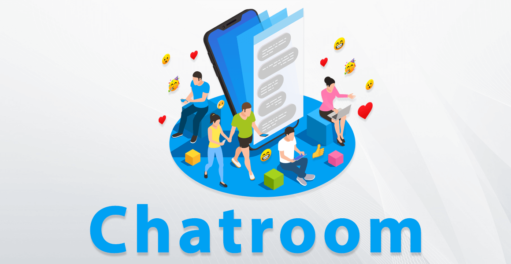

Progettazione Database e Sviluppo Software
Durante il quinto anno, l'insegnamento dell'Informatica si è concentrato principalmente sulla progettazione avanzata di database relazionali e non relazionali, sullo sviluppo di applicazioni web moderne e sullo integration di architetture client-server sicure. Grande attenzione è stata data alla strutturazione del backend tramite linguaggi di programmazione robusti.
Il mio Progetto: Applicazione "Chat Room"

Chat Room è un'applicazione interattiva progettata per consentire agli utenti di autenticarsi in modo sicuro, accedere a una bacheca principale (Dashboard) e comunicare all'interno della piattaforma. L'obiettivo principale dell'applicazione è garantire la sicurezza dei dati, l'integrità delle sessioni utente e un'interfaccia grafica fluida e intuitiva (sviluppata tramite il framework CSS Bulma).
Flusso di Funzionamento e Moduli Principali
L'applicazione si articola su cinque moduli fondamentali, ognuno con una precisa responsabilità:
- Registrazione: Permette ai nuovi utenti di creare un account. Per garantire la sicurezza, la password inserita non viene mai salvata in chiaro, ma viene cifrata tramite algoritmi di hashing sicuri prima di essere memorizzata nel database.
- Login: Gestisce l'autenticazione. Il sistema verifica la presenza dello username e, tramite funzioni crittografiche di verifica, confronta la password inserita con l'hash memorizzato. Se il controllo va a buon fine, viene avviata una sessione protetta.
- Dashboard: Rappresenta il fulcro dell'applicazione, l'area riservata visibile solo agli utenti autenticati. Qui l'utente può visualizzare i messaggi esistenti e l'elenco delle stanze o delle chat attive.
- Crea: È il modulo che permette l'invio dei messaggi o la creazione di nuove stanze di discussione. Gestisce l'inserimento dei dati nel database associandoli all'utente correntemente loggato.
- Logout: Consente di terminare la sessione in modo sicuro, distruggendo i dati temporanei del server e reindirizzando l'utente alla pagina di login, impedendo accessi non autorizzati da parte di terzi dallo stesso dispositivo.
I Pilastri Informatici della Sicurezza
Il funzionamento del sistema si basa su due pilastri informatici fondamentali che ne garantiscono la stabilità e l'affidabilità:
- Gestione dello Stato tramite Sessioni: Poiché il protocollo HTTP è stateless (non mantiene memoria delle richieste precedenti), viene utilizzato lo strumento delle Sessioni PHP. Una volta eseguito il login, il server assegna un ID di sessione univoco al client. Questo permette di verificare in ogni pagina (come la Dashboard) che l'utente sia realmente autorizzato a visualizzare i contenuti.
- Protezione contro gli Attacchi SQL Injection: Nel backend, l'interazione con il database avviene tramite i Prepared Statements (Query Preparate). Questo metodo separa nettamente le istruzioni SQL dai dati inseriti dall'utente, neutralizzando i tentativi di injection.
- Sicurezza delle Password: Viene implementato l'hashing moderno, che trasforma la password in una stringa irreversibile, rendendo i dati protetti anche in caso di accesso non autorizzato al database.